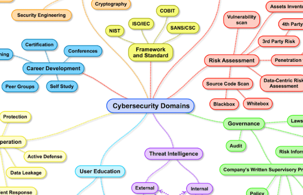

Providing advice on “getting started in digital security” is similar to providing advice on “getting started in
medicine.” If you ask a neurosurgeon he or she may propose some sort of experiment with dead frog legs and
batteries. If you ask a dermatologist you might get advice on protection from the sun whenever you go outside.
Asking a “security person” will likewise result in many different responses, depending on the individual’s
background and tastes. --Richard Bejtlich


Cybersecurity is the practice of protecting systems, networks, and programs from digital attacks. These cyberattacks are usually aimed at accessing, changing, or destroying sensitive information; extorting money from users; or interrupting normal business processes.

If you are getting started in Cybersecurity you should definitely learn these concepts. Simply put it, you cannot expect to become a cybersecurity expert, unless you start with the fundamentals behind I.T. Cybersecurity is an advanced part of I.T., meaning you need to have a working and applied understanding behind how the basics of I.T. connect to each other.

Let us take a look what advice experts and professionals want to give for getting started and explore the steps in detail. Let us understand their perspectives, and implement their advice to informative and actionable content for getting started in this domain.
Computer security threats are relentlessly inventive. Masters of disguise and manipulation, these threats constantly evolve to find new ways to annoy, steal and harm.

The most difficult challenge in cyber security is the ever-evolving nature of security risks themselves.

Recommended resources from experts and students. This includes all the books and courses that they have personally referred.
{kind=link}